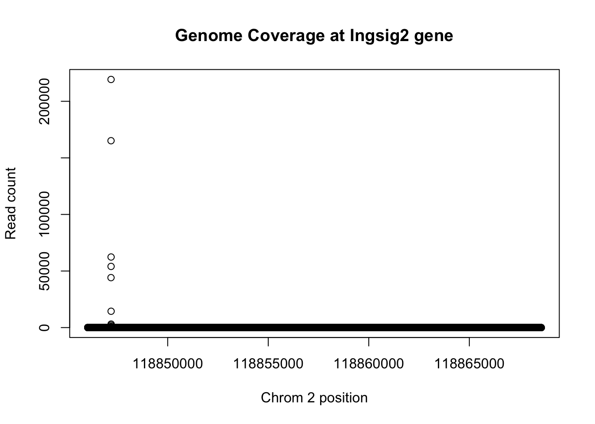

Last updated: 2018-03-06
Code version: 32a1f5d
This analysis will allow me assess the places in the data that account for the read pileup. I will look for ribosomal, snoRNA, snRNA, hNRP genes. I will then look at highly expressed genes that we would not expect high expression/pileup such as insig1 (found in net3 exploration). I will remove reads at all of these locations by creating a blacklist of sequences to filter the fastq files.
First I am subsetting the genome coverage file for the 2nd chromosome. This is where insig2 is. I can use this to look at the distribution.
awk '{ if ($1 = 2) { print } }' YG-SP-NET3-18486_combined_Netpilot-sort.dedup.cov.bed > YG-SP-NET3-18486_combined_Netpilot-sort.dedup.cov.chr2.bed
awk '{ if ($1 = 2) { print } }' YG-SP-NET3-18486_combined_Netpilot-sort.cov.bed > YG-SP-NET3-18486_combined_Netpilot-sort.cov.chr2.bed
awk '{ if ($2 > 118846028 && $2 < 118868573) { print }}' YG-SP-NET3-18486_combined_Netpilot-sort.cov.chr2.bed > YG-SP-NET3-18486_combined_Netpilot-sort.cov.insig2.bedPull in the insig2:
insig2=read.table("../data/YG-SP-NET3-18486_combined_Netpilot-sort.cov.insig2.bed", header=FALSE)
plot(insig2$V3 ~ insig2$V2, ylab="Read count", xlab="Chrom 2 position", main="Genome Coverage at Ingsig2 gene")
Do this for the same line but deduplicated:
awk '{ if ($2 > 118846028 && $2 < 118868573) { print }}' YG-SP-NET3-18486_combined_Netpilot-sort.dedup.cov.chr2.bed > YG-SP-NET3-18486_combined_Netpilot-sort.dedup.cov.insig2.bed
insig2_de=read.table("../data/YG-SP-NET3-18486_combined_Netpilot-sort.dedup.cov.insig2.bed", header=FALSE)
plot(insig2_de$V3 ~ insig2_de$V2, ylab="Molecule count", xlab="Chrom 2 position", main="Genome Coverage at Ingsig2 gene (deduplicated)")max_sort=max(insig2$V3)
max_sort_de=max(insig2_de$V3)
1- max_sort_de/max_sort[1] 0.9864162This means that the deduplication removed 99 percent of the buildup but the peak is still there.
Try this with ggplot.
library(ggplot2)
colnames(insig2)=c("chr", "pos", "count")
denstiy_plot= ggplot(data=insig2, aes(y=count, x=pos)) + geom_line(aes(x=pos,y=count))
denstiy_plotHow to make this more efficent:
* Look at the top genes
* create a script where I can enter the positions and get out the gene coverage by base (need gene name, chrom, start, end) * pull it into R and plot like this
To do this I need to use bedtools coverage -counts
Copy the gencode gene file /project2/gilad/briana/Net-seq/Net-seq3/gencode_noCHR_genes_MT_Fsort.bed to genome annotation.
#!/bin/bash
#SBATCH --job-name=count_cov
#SBATCH --output=count_cov_sbatch.out
#SBATCH --error=count_cov_sbatch.err
#SBATCH --time=8:00:00
#SBATCH --partition=broadwl
#SBATCH --mem=36G
#SBATCH --mail-type=END
module load Anaconda3
source activate net-seq
sample=$1
describer=$(echo ${sample} | sed -e 's/.*\YG-SP-//' | sed -e "s/_combined_Netpilot-sort.bed$//")
bedtools coverage -counts -sorted -a /project2/gilad/briana/genome_anotation_data/gencode_noCHR_genes_MT_Fsort.bed -b $1 > /project2/gilad/briana/Net-seq-pilot/data/gene_cov/${describer}.gene.coverage.bedRun this first for /project2/gilad/briana/Net-seq-pilot/data/gene_cov/YG-SP-NET3-18486_combined_Netpilot-sort.bed
gene_cov_18486= read.table("../data/NET3-18486.gene.coverage.bed")
colnames(gene_cov_18486)= c("chr", "start", "end", "gene", "score", "strand", "count")summary(gene_cov_18486$count) Min. 1st Qu. Median Mean 3rd Qu. Max.
0 0 14 1665 65 31156619 gene_cov_18486_sort= gene_cov_18486[order(gene_cov_18486$count, decreasing = TRUE),]
plot(log10(gene_cov_18486_sort$count))gene_cov_18486_sort[1:15,] chr start end gene score strand count
12688 2 118846049 118867604 ENST00000245787.4 0 + 31156619
12689 2 118846049 118868573 ENST00000485520.1 0 + 31156619
12690 2 118889703 118943962 ENST00000414886.1 0 - 30589292
5265 1 148604907 148605072 ENST00000384476.1 0 - 2118514
71571 15 65597014 65597130 ENST00000363286.1 0 + 1738588
71568 15 65558914 65592956 ENST00000558873.1 0 - 1220341
71570 15 65588388 65588504 ENST00000362698.1 0 + 1219665
52960 10 103113819 103317078 ENST00000370187.3 0 + 1198878
52961 10 103113858 103317054 ENST00000393441.4 0 + 1198862
52962 10 103113863 103317078 ENST00000408038.2 0 + 1198862
52963 10 103124601 103124792 ENST00000410482.1 0 - 1198755
5276 1 149224057 149224221 ENST00000384010.1 0 - 1022753
23151 4 76781024 76823681 ENST00000286719.7 0 - 935122
56403 11 62600383 62609281 ENST00000525239.1 0 - 813933
56407 11 62609090 62609281 ENST00000410396.1 0 - 813798Many of these are SnRNAs. Getting rid of these should help.
Make the bash script
#!/bin/bash
#SBATCH --job-name=gene_cov
#SBATCH --time=8:00:00
#SBATCH --output=gene_cov_sbatch.out
#SBATCH --error=gene_cov_sbatch.err
#SBATCH --partition=broadwl
#SBATCH --mem=10G
#SBATCH --mail-type=END
#script takes in the chr, start, end, and gene name. It will output a
chr=$1
start=$2
end=$3
name=$4
awk -v var=${chr} '{ if ($1 = var) { print }}' /project2/gilad/briana/Net-seq-pilot/data/cov/YG-SP-NET3-18486_combined_Netpilot-sort.cov.bed > temp
awk -v var1=${start} -v var2=${end} '{ if ($2 > var1 && $2 < var2) { print }}' -v var1=${start} -v var2=${end} temp > /project2/gilad/briana/Net-seq-pilot/output/high_gene_cov/YG-SP-NET3-18486_combined_Netpilot-sort.cov.${name}.bedRfunction to make plot:
plot_gene_dis <- function(file, chr, geneName){
gene <- read.table(file, header=FALSE)
colnames(gene)=c("chr", "pos", "count")
plt_gene = ggplot(data=gene) + geom_line(aes(x=pos,y=count)) + ggtitle(paste("Genome coverage at ",geneName)) + xlab(paste("Chrom ",chr ," postion")) + ylab("read count")
return(plt_gene)
}sbatch high_ex_gene_cov.sh ‘1’ ‘148604907’ ‘148605072’ ‘AC093901’
aco_plt=plot_gene_dis("../data/YG-SP-NET3-18486_combined_Netpilot-sort.cov.AC093901.bed", "1", "ACO93901")
aco_pltsbatch high_ex_gene_cov.sh ‘15’ ‘65597014’ ‘65597130’ ‘RNU5B’
RNU5B_plt=plot_gene_dis("../data/YG-SP-NET3-18486_combined_Netpilot-sort.cov.RNU5B.bed", "15", "RNU5B")
RNU5B_pltRNU5B=read.table("../data/YG-SP-NET3-18486_combined_Netpilot-sort.cov.RNU5B.bed", header=FALSE, col.names = c("chr", "pos", "count"))sbatch high_ex_gene_cov.sh ‘10’ ‘103113819’ ‘103317078’ ‘BTRC’
btrc_plt= plot_gene_dis("../data/YG-SP-NET3-18486_combined_Netpilot-sort.cov.BTRC.bed", "10", "BTRC")
btrc_pltbtrc=read.table("../data/YG-SP-NET3-18486_combined_Netpilot-sort.cov.BTRC.bed", header=FALSE)
colnames(btrc)= c("chr", "pos", "count")
plot(btrc$count~btrc$pos)btrc_sort=btrc[order(btrc$count, decreasing=TRUE),]
btrc_sort[1:20,] chr pos count
1840110 10 103124607 1064950
1840111 10 103124608 111925
1840108 10 103124605 10272
1840112 10 103124609 4733
1840109 10 103124606 1846
1840113 10 103124610 1693
1840114 10 103124611 967
1840115 10 103124612 835
1840116 10 103124613 698
1840254 10 103124751 114
1840117 10 103124614 79
1840159 10 103124656 78
1840165 10 103124662 77
1840158 10 103124655 72
1809410 10 103297165 56
841530 10 103142317 49
1840154 10 103124651 47
1610687 10 103301700 39
1840157 10 103124654 32
1840152 10 103124649 30sbatch high_ex_gene_cov.sh ‘10’ ‘103124601’ ‘103124792’ ‘rnu259p’
rnu259_plt=plot_gene_dis("../data/YG-SP-NET3-18486_combined_Netpilot-sort.cov.rnu259p.bed", "10", "rnu259p")
rnu259_pltsbatch high_ex_gene_cov.sh ‘4’ ‘76781024’ ‘76823681’ ‘ppef2’
ppef2_plt= plot_gene_dis("../data/YG-SP-NET3-18486_combined_Netpilot-sort.cov.ppef2.bed", "4", "ppef2")
ppef2_pltsbatch high_ex_gene_cov.sh ‘11’ ‘62600383’ ‘62609281’ ‘WDR74’ 62600383 62609281
WDR74_plt= plot_gene_dis("../data/YG-SP-NET3-18486_combined_Netpilot-sort.cov.WDR74.bed", "11", "WDR74")
WDR74_pltwd74=read.table("../data/YG-SP-NET3-18486_combined_Netpilot-sort.cov.WDR74.bed")
colnames(wd74)=c("chr", "pos", "count")
summary(wd74$V3)Length Class Mode
0 NULL NULL Think for a summary statistic for these genes. Maybe the top position over the sum of the gene standardized by length?
buildup_test_stat=function(df){
length=nrow(df)
x=df$count/length
max=max(x)
teststat= max/sum(x)
return(teststat)
}
buildup_test_stat(insig2)[1] 0.3864875buildup_test_stat(btrc)[1] 0.8870532buildup_test_stat(RNU5B)[1] 0.3864984buildup_test_stat(wd74)[1] 0.4801532Extend analysis to 1 more line to make sure the top genes are the same:
sessionInfo()R version 3.4.2 (2017-09-28)
Platform: x86_64-apple-darwin15.6.0 (64-bit)
Running under: macOS Sierra 10.12.6
Matrix products: default
BLAS: /Library/Frameworks/R.framework/Versions/3.4/Resources/lib/libRblas.0.dylib
LAPACK: /Library/Frameworks/R.framework/Versions/3.4/Resources/lib/libRlapack.dylib
locale:
[1] en_US.UTF-8/en_US.UTF-8/en_US.UTF-8/C/en_US.UTF-8/en_US.UTF-8
attached base packages:
[1] stats graphics grDevices utils datasets methods base
other attached packages:
[1] ggplot2_2.2.1
loaded via a namespace (and not attached):
[1] Rcpp_0.12.15 digest_0.6.14 rprojroot_1.3-2 plyr_1.8.4
[5] grid_3.4.2 gtable_0.2.0 backports_1.1.2 git2r_0.21.0
[9] magrittr_1.5 scales_0.5.0 evaluate_0.10.1 pillar_1.1.0
[13] rlang_0.1.6 stringi_1.1.6 lazyeval_0.2.1 rmarkdown_1.8.5
[17] labeling_0.3 tools_3.4.2 stringr_1.2.0 munsell_0.4.3
[21] yaml_2.1.16 compiler_3.4.2 colorspace_1.3-2 htmltools_0.3.6
[25] knitr_1.18 tibble_1.4.2 This R Markdown site was created with workflowr